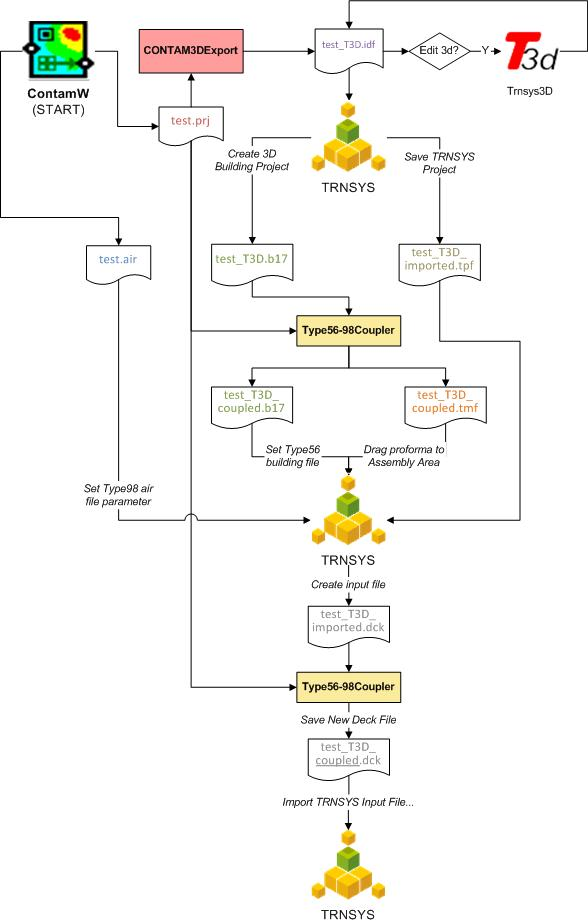

The following diagram illustrates the coupling process and the relationships between the files and software involved in the coupling process. This diagram is based on coupling the first version of Type98 that was developed for coupling CONTAM 3.1. The method has been slightly modified with the development of CONTAM 3.2 which utilizes the VEF file in place of the AIR file. The VEF file can be generated using the Type56 98Coupler, and the content of this text file is also provided below. The above TRNSYS-CONTAM coupling process also includes the use of the VEF file.
